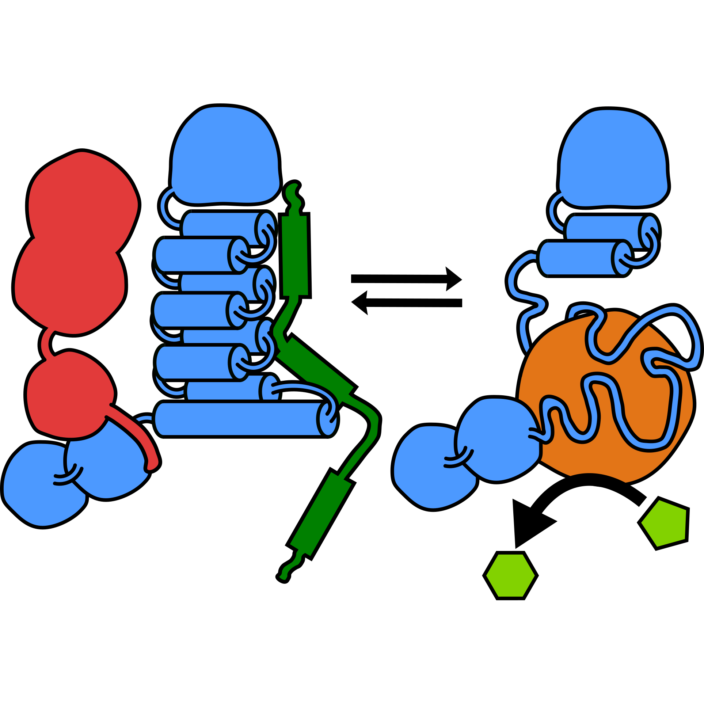
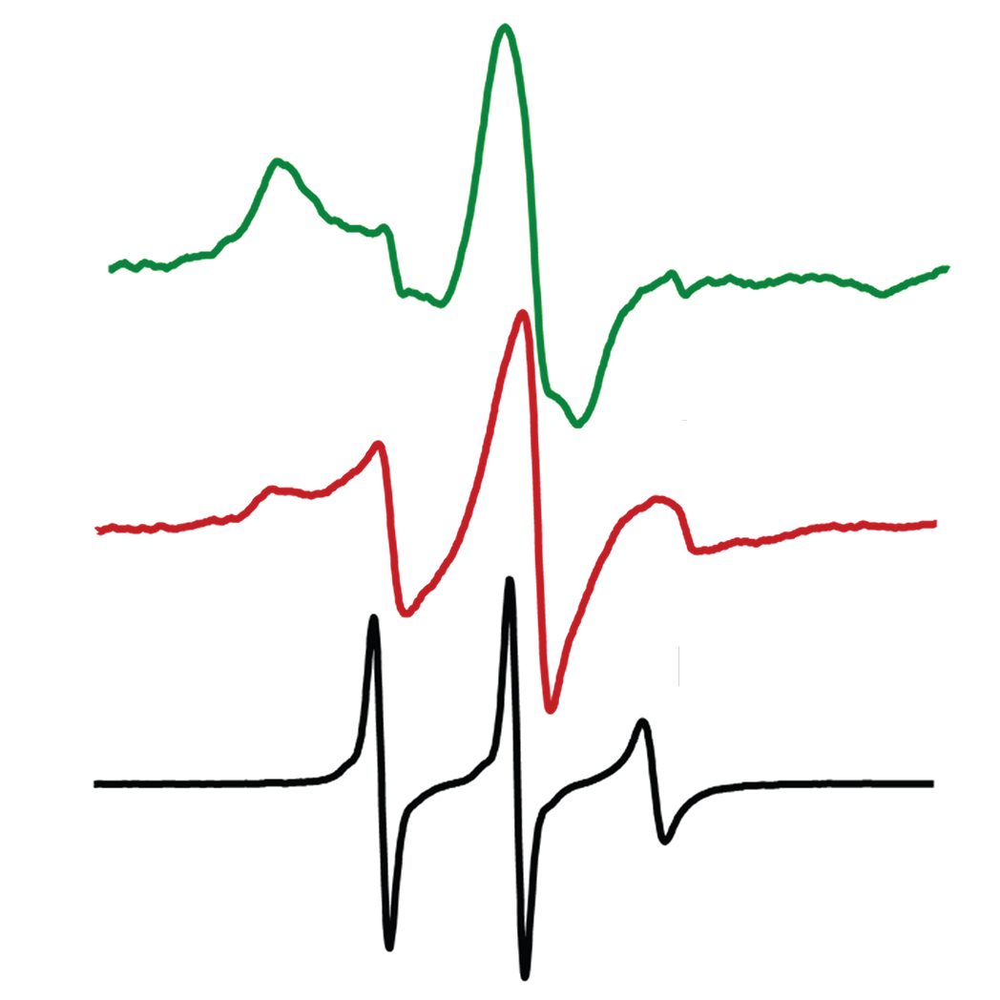
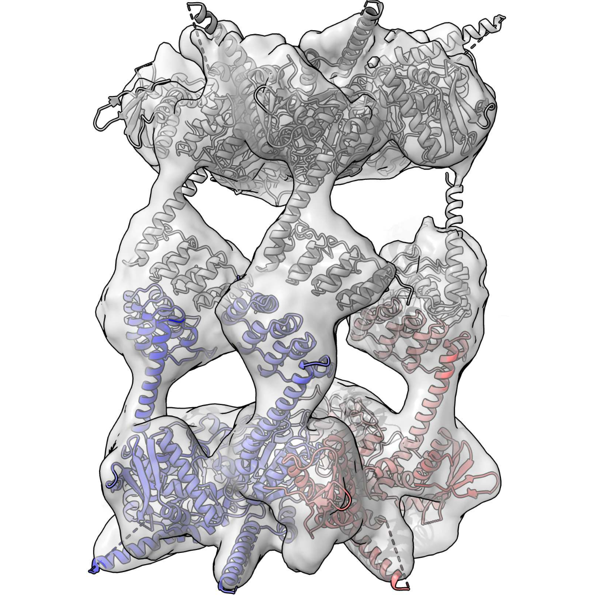
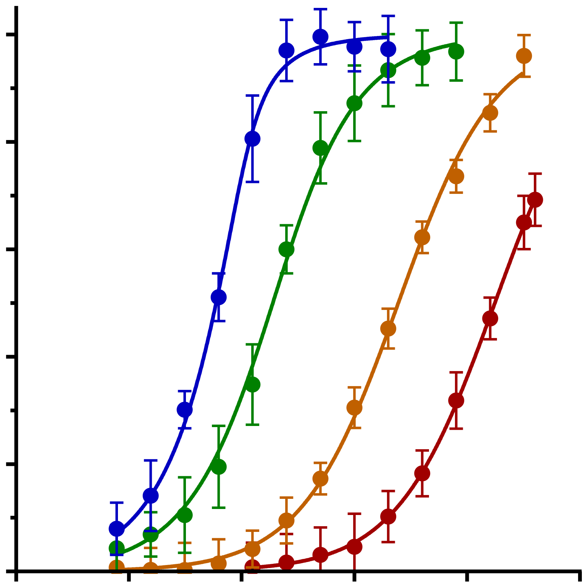
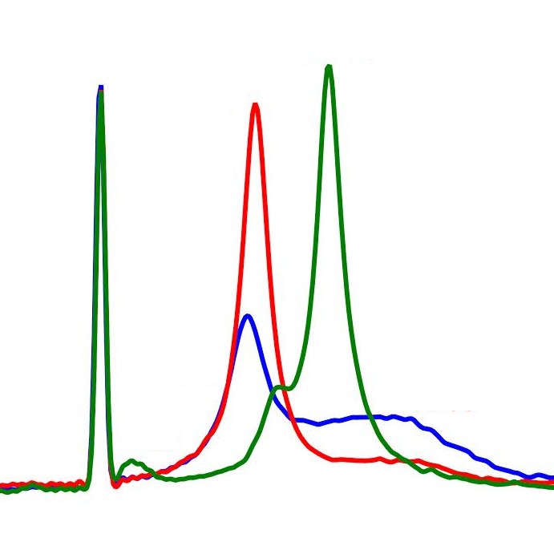
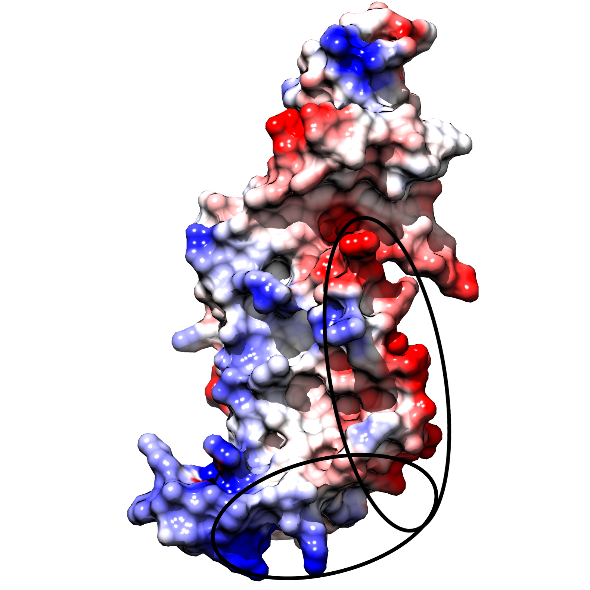
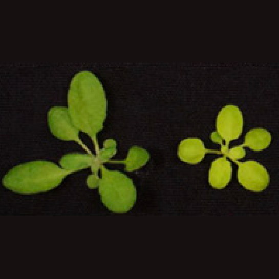
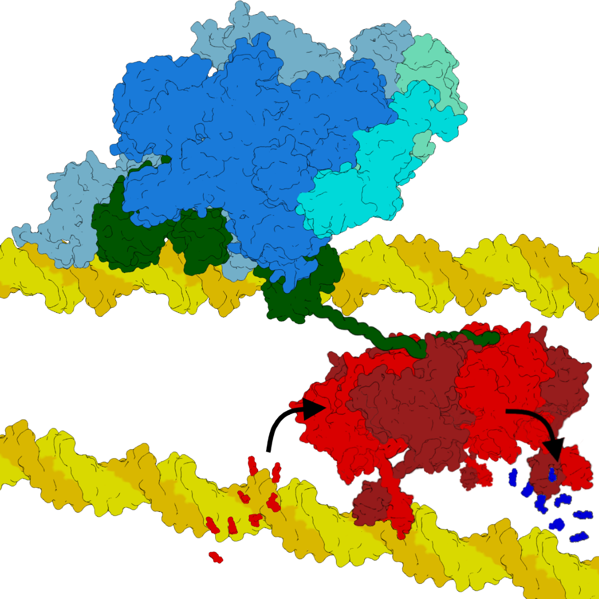
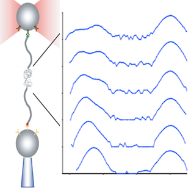

Alex Siegelasiegel@caltech.edu CVPostdoctoral Scholar in Chemistry, California Institute of Technology (2017-present) Ph.D. Biophysics and specialization in Chemical Biology, University of California, Berkeley (2016) B.S. Biology and Chemistry double major, graduated with honors, California Institute of Technology (2008) |
Research
Chloroplast Signal Recognition Particle
In land plants, photosynthesis requires a light harvesting complex (LHC) within the chloroplast’s thylakoid membrane that positions chlorophyll and other pigments to capture and funnel photons to the reaction machinery at the photosynthetic core. The LHC primarily consists of small membrane protein LHCPs and their bound chlorophylls. How these aggregation-prone LHCPs are delivered from their origin on cytosolic ribosomes, through the chloroplasts, and into the thylakoid membrane, and how this process is coordinated with the synthesis of chlorophyll, remained unclear. We found that a chloroplast chaperone, cpSRP43, plays a role in both LHCP delivery by protecting LHCP's transmembrane domains (McAvoy et al., Journal of Biological Chemistry, 2018)and in chlorophyll biosynthesis by protecting enzymes catalyzing steps in tetrapyrrole biosynthesis (Wang et al., Proc. Nat. Acad. Sci., 2018). Using NMR spectroscopy, EPR, Mass Spectrometry and other biophysical tools, I found that cpSRP43 samples two conformations: a partially disordered open state and a well-folded closed state, with only the closed state able to protect LHCPs (Siegel*, McAvoy* et al., Journal of Molecular Biology, 2020). At high temperature, cpSRP43 also protects chlorophyll synthesizing enzymes (Ji*, Siegel* et al., Nature Plants, 2021). The population of these two states is regulated by temperature and confers cpSRP43 with its two distinct client specificities and activities (Siegel* et al., 2024 in prep). Understanding how cpSRP43’s conformational states change its activity has also enabled engineering efforts to retarget cpSRP43 towards aggregates implicated in human diseases.Human ClpB homolog Skd3
Skd3, a human homolog of bacterial ClpB, is a chaperone within the mitochondrial inner membrane implicated in several diseases associated with mitochondrial disfunction. We solved the cryo-EM structure of Skd3, which revealed two unique assembly states: a hexameric ring similar to bacterial ClpB, and a unique dodecamer formed by two stacked rings creating a central cage. The two forms confer two distinct functions, with the hexameric ring acting as a disaggregase that grips and threads clients through its pore to break apart aggregates, and the dodecameric cage forming a protected environment to prevent offpathway interactions that impair client refolding. These unique features of Skd3 enable it to act as a standalone chaperone that can recognize, disaggregate, and refold its clients all without co-chaperones (Gupta*, Lentzsch*, Siegel* et al., Science Advances, 2023).Alternative Sigma Factor σ54
Before bacterial RNA polymerase (RNAP) can transcribe mRNA from DNA, a modular subunit called the σ factor binds both RNAP and DNA in front of genes and helps break apart the double stranded DNA to expose a single strand template. The alternative σ factor, σ54, requires an additional AAA+ ATPase transcriptional activator, NtrC, that gives it additional control over transcription of its genes and allows a rapid transcriptional response to environmental stimuli, but the mechanism behind this activation step remained unclear. I found that the N-terminus of σ54 is intrinsically disordered but contains a minimal interacting amphipathic helix that is necessary and sufficient for its interaction with NtrC subunits in the ATP state (Siegel, AR, Wemmer, DE, Journal of Molecular Biology, 2016). With this and other biochemical data, I developed a mechanistic model where ATP hydrolysis drives a concerted motion of NtrC pore loops and this force threads the N-terminus of σ54 causing a force-dependent unfolding of adjacent domains that ultimately reconfigures the DNA binding domain to trigger DNA opening and initiate transcription (Siegel, AR, Dissertation, 2016).| |
 |
Publications
|  | Switchable client specificity in a dual functional chaperone coordinates light harvesting complex biogenesis In preparation for submission (2024) Siegel, A., ... Shan, SO TBD |
| |
|
|  | Biophysics of Molecular Chaperones: EPR Studies of Chaperone Interactions and Dynamics Royal Society of Chemistry (2023) Siegel, A*, Singh, J*, Qin, PZ & Shan, SO DOI |
| |
|
|  | Dodecamer assembly of a metazoan AAA+ chaperone couples substrate extraction to refolding Science Advances (2023) Gupta, A*, Lentzsch AM*, Siegel A*, Yu Z, Chio US, Cheng Y, & Shan SO DOI , PubMed |
| |
|
|  | Chloroplast SRP43 autonomously protects chlorophyll biosynthesis proteins against heat shock. Nature Plants (2021) Ji S*, Siegel A*, Shan, S., Grimm, B. & Wang, P. DOI , PubMed |
| |
|
|  | A Disorder-to-Order Transition Activates an ATP-Independent Membrane Protein Chaperone. Journal of Molecular Biology (2020) Siegel A*, McAvoy C*, Lam V, Liang FC, Kroon G, Miaou E, Griffin P, Wright P, Shan SO. DOI , PubMed |
| |
|
|  | Two Distinct Sites of client protein interaction with the chaperone cpSRP43 Journal of Biological Chemistry (2018) McAvoy C, Siegel A, Piszkiewicz S, Miaou E, Yu M, Nguyen T, Moradian A, Sweredoski MJ, Hess S, Shan SO. DOI , PubMed |
| |
|
|  | Chloroplast SRP43 acts as a chaperone for glutamyl-tRNA reductase, the rate-limiting enzyme in tetrapyrrole biosynthesis Proceedings of the National Academy of Sciences (2018) Wang P, Liang FC, Wittmann D, Siegel A, Shan SO, Grimm B. DOI , PubMed |
| |
|
|  | Role of the σ54 Activator Interacting Domain in Bacterial Transcription Initiation Journal of Molecular Biology (2016) Siegel AR, Wemmer DE DOI , PubMed |
| |
|
|  | Mechanisms of σ54 bacterial transcription activation Doctoral Dissertation University of California, Berkeley (2016) Siegel AR eScholarship |
| |
|
Teaching
Advanced Molecular Biology Lab (MCB 110)UC Berkeley (2016)
Students learned and carried out introductory molecular biology techniques (e.g. cloning, protein expression) and then designed their own experiments to study the yeast kinesin Cin8.
Biophysics module on protein NMR spectroscopy
UC Berkeley (2012)
I designed and taught a 1 unit, 5-week short course on protein NMR to interested early graduate students.
Introductory Chemistry Lab (CHEM 4)
UC Berkeley (2011)
I led both lab classes and discussion sessions for two classes of ~30 students, along with office hours.
Biophysical Chemistry (CHEM 130)
UC Berkeley (2010)
TAed two sections of CHEM110 of ~30 students each. Prepared weekly section presentations covering introductory topics in molecular biology. Held weekly office hours. Wrote some of the homework and exam problems for the course.
Introductory Biology (Bi 1)
Caltech (2007 & 2008)
TAed a section of ~20 undergraduates each year. Responsibilities include preparing weekly section presentations covering introductory topics in molecular biology, holding office hours, and writing homework and exam problems. In 2008, I received the Biology Undergraduate Student Teaching Award for TAing this course.
| |
|
Mentoring
| Project | Dates | |
| Postdoc | Identifying cpSRP43-client binding interfaces by crosslinking-coupled to mass spectrometry.b | Sep 2024-present |
| Undergrad | Measuring chaperone-client binding by fluorescence lifetime spectroscopy. (SURF) | Jun 2024-Aug 2024 |
| Grad (Caltech) | Measuring conformational states of tailor-made mutant chaperones evolved against amyloids. (Rotation) | Sep 2023-Dec 2023 |
| Grad (Caltech) | Characterization ligand binding by cpSRP43’s two conformational states. (Rotation) | Sep 2022-Dec 2022 |
| High School | Identifying the client binding state of tetrapyrrole biosynthesis clients to cpSRP43 by anisotropy. (Science Fair). Temperature-dependent conformational changes in cpSRP43 by circular dichroism and fluorine NMR. (Science Fair) | Jun 2021-Jun 2023 |
| High School | Measuring the thermal dependence of cpSRP43 client binding by FRET. (High School Thesis) | Jun 2021-Jun 2023 |
| Grad (Caltech) | Using a split luciferase system to detect nanomolar binding affinity. (Rotation) | Sep 2021-Dec 2021 |
| Grad (Caltech) | Client binding of a superactive chaperone from directed evolution. (Rotation) | Sep 2021-Dec 2021 |
| High School | Measuring the conformational changes in cpSRP43 upon ligand binding by fluorine NMR. (Science Fair) | Aug 2019-Sep 2021 |
| High School | Measuring the conformational changes in cpSRP43 upon ligand binding by fluorine NMR. (Science Fair) | Aug 2019- Sep 2021 |
| Undergrad (Caltech) | Monitoring the conformational states of cpSRP43 by fluorine NMR. (SURF) | Feb 2019-Oct 2019 |
| High School | NMR assignment strategy by site-directed mutagenesis of cpSRP43. | Sep 2017-Jun 2019 |
| High School | NMR assignment strategy by site-directed mutagenesis of cpSRP43. (High School Thesis) | Sep 2017-Jun 2019 |
| Undergrad | Monitoring cpSRP43-LHCP client interactions by crosslinking. (SURF) | Jun 2017-Aug 2017 |
| Grad (Berkeley) | Force-dependence of the σ54 core binding domain using molecular tweezers. (Rotation) | Aug 2013-Dec 2014 |
| Grad (Berkeley) | Intrinsic disorder of σ54 domains in the RNA polymerase holoenzyme by NMR. (Rotation) | Sep 2014-Dec 2014 |
| Undergrad (Berkeley) | Activation of σ54 by AAA+ ATPase enhancer binding proteins. (Senior Thesis) | Jun 2013-Dec 2013 |
| Grad (Berkeley) | Dynamics of M. tuberculosis lysine acetyltransferase (Rv0998) by NMR. (Rotation) | Sep 2011-Dec 2011 |
| Undergrad (Berkeley) | NMR studies of NtrC4 receiver domain activation. (Senior Thesis) | Apr 2011-Jun 2012 |
| Undergrad (Berkeley) | Measuring the force-dependent unfolding of the σ54 by molecular tweezers. (Senior Thesis) | Aug 2010-Jun 2013 |